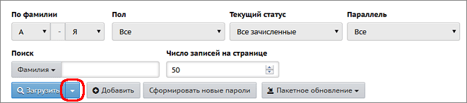
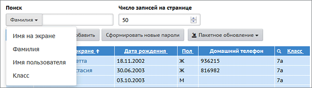

| · | для просмотра алфавитной книги (общего списка учащихся в алфавитном порядке) выберите параметры фильтров "По фамилии" и "Пол" и нажмите кнопку Загрузить.
|
| · | для просмотра списка конкретного класса выберите "Текущий статус" = "Все зачисленные", затем нужные "Параллель" и литеру класса и нажмите кнопку Загрузить.
|
|
Нажав на треугольник справа от кнопки Загрузить, вы можете настроить вид списка учеников (например, добавить свидетельство о рождении или ФИО родителей).
Откроется окно "Настройки", в котором можно отметить дополнительные поля, и они появятся в списке учеников. |
 |
Выгрузка сведений в Excel
| · | Кнопка Экспорт в Excel в правой верхней части экрана позволяет сохранить список учеников в формате Excel. В том числе, таким образом при помощи Excel можно распечатать список. В файл Excel попадает тот же самый набор полей, который отображён на экране (в том числе это касается выбранных фильтров).
|
| · | Если требуется выгрузить в Excel наиболее полные сведения об учениках и родителях, то нужно использовать кнопку Пакетное обновление->1. Выгрузка данных. (см.ниже Кнопка "Пакетное обновление").
|
Быстрый поиск учащихся
Чтобы быстро найти нужного ученика, в графе "Поиск" введите первые буквы фамилии, и список будет сразу ограничен нужными учениками. Кроме фамилии, можно быстро искать по другим полям, например, по имени пользователя (т.е. логину):

Поле "Текущий статус"
Кроме значения "Все зачисленные", в поле "Текущий статус" можно выбрать значения:
| · | "Все ученики" - это все зачисленные ученики плюс выбывшие в текущем учебном году.
|
| · | "Все прикреплённые к ОО" - это ученики, которые прикреплены к школе, но в системе СГО не числятся в списке конкретного класса. Например, находящиеся на индивидуальном обучении на дому. Более подробно о категории "Прикреплённые к ОО".
|
Добавление новых учеников
Для зачисления учащихся в школу используйте кнопку Добавить. После этого вы попадаете в Книгу движения учащихся, где нужно создать приказ о зачислении, затем воспользоваться одним из способов ввода. Например:
| · | при быстром вводе информация вводится с помощью формы для ввода;
|
| · | при импорте вносится информация из специально подготовленного файла,
|
Редактирование личных карточек учащихся
Для редактирования личных карточек отдельных учащихся щёлкните на фамилию, имя учащегося, и вы окажетесь на странице Сведения об ученике.
О массовом редактировании списка учащихся - см. ниже Кнопка "Пакетное обновление".
Для редактирования сведений об учениках у вас должно быть право доступа Редактировать все сведения об учениках и родителях или Редактировать сведения об учениках и родителях в своём классе. Если такого права у вас нет, то для просмотра кратких сведений у вас должно быть право доступа Просматривать краткие сведения об учениках и родителях.
Удаление учащихся
Важно! Если учащийся выбыл из школы, то его нельзя удалять: необходимо перейти в Книгу движения учащихся и создать приказ о выбытии данного ребёнка.
А возможность удаления учащихся (без приказа о выбытии) служит только для удаления явно ошибочных записей. Для удаления учащихся необходимо иметь право доступа Удалять пользователей из системы.
Кнопка "Сформировать новые пароли"
Администратор системы может провести индивидуальную или массовую смену паролей, с присвоением случайных паролей, которые он затем может раздать учащимся.
| 1. | Выведите на экран список учеников (с помощью кнопки Загрузить).
|
| 2. | Нажмите кнопку Сформировать новые пароли.
|
| 3. | Отметьте учеников, которым система должна сгенерировать новые пароли. Для этого просто щёлкните по нужным строкам в таблице: при выделении строки меняют цвет. Затем нажмите кнопку Продолжить. Обратите внимание! Выбранным ученикам будет сброшен их текущий пароль.
|
| 4. | Система присвоит выбранным ученикам новые пароли, которые будут случайной последовательностью латинских букв, цифр и знаков препинания.
|
| 5. | На экран будет выведена таблица учеников, которым сформированы новые пароли, с удобной возможностью распечатать этот список. Обратите внимание! Кроме этой таблицы, новые пароли нигде не отображаются, их необходимо сразу распечатать либо скопировать с экрана.
|
| 6. | При первом входе в систему ученика с новым паролем, система предложит ему сменить пароль на свой собственный.
|
Кнопка Сформировать новые пароли доступна только пользователям с ролью "Администратор системы", причём только если для этой роли выставлены права доступа: Редактировать все сведения об учениках и родителях и Редактировать имена пользователей и пароли учеников и родителей.
Кнопка "Пакетное обновление"
Данная кнопка обеспечивает возможность массового редактирования личных карточек учащихся, например, в случае, когда всем учащимся нужно заполнить какое-то поле. Удобно, что нет необходимости входить в личную карточку каждого ученика.
Подробнее о пакетном обновлении...
Экспорт в Moodle
Данная кнопка в правом верхнем углу экрана позволяет выгрузить список учеников в файл, который затем можно импортировать в систему дистанционного обучения Moodle. (Подробнее о совместной работе систем "Сетевой Город. Образование" и "Moodle" можно прочитать в документации в инсталляционном пакете "Сетевого Города".)